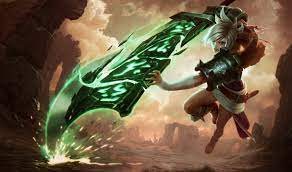

The Exile Riven
Noxian Swordmaster
The Sinister Blade Katarina
Noxian Assasian
Once a swordmaster in the warhosts of Noxus, Riven is an expatriate in a land she previously tried to conquer. She rose through the ranks on the strength of her conviction.
Decisive in judgment and lethal in combat, Katarina is a Noxian assassin of the highest caliber. Eldest daughter to the legendary General Du Couteau, she made her talents known with swift kills against unsuspecting enemies